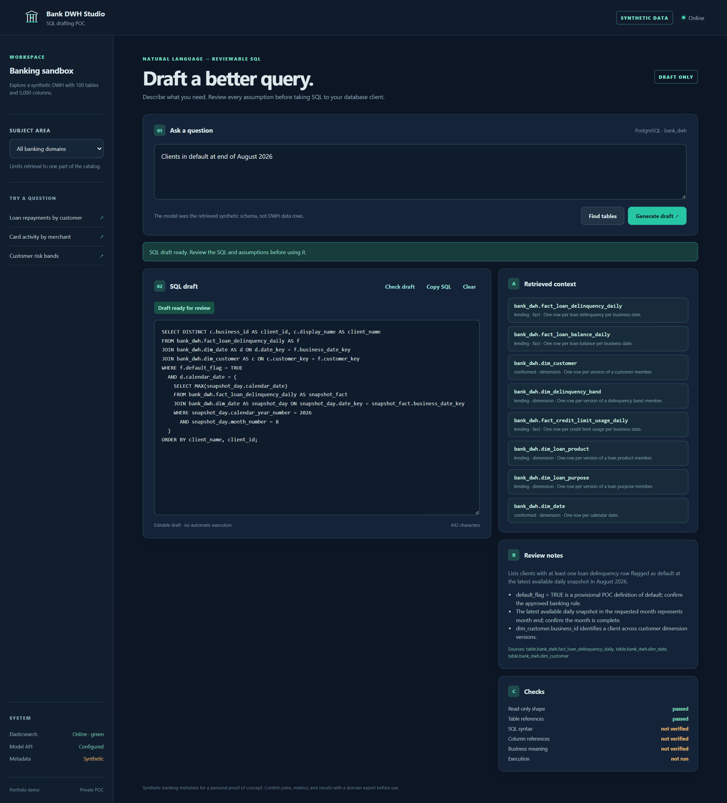
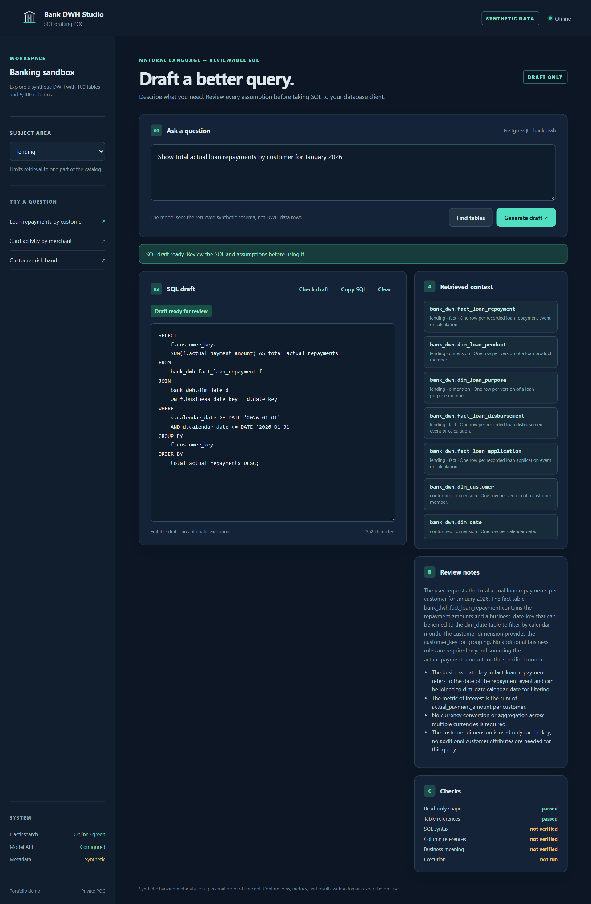
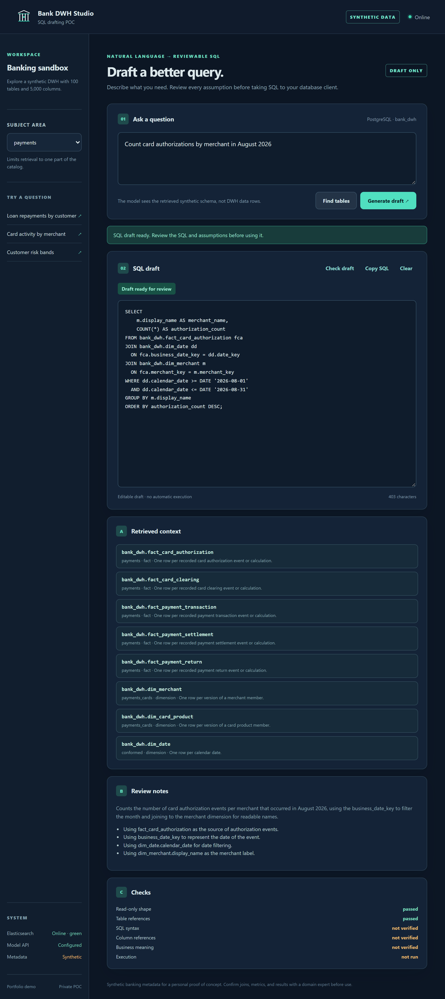
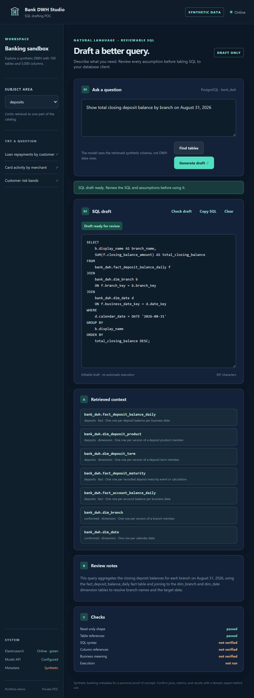
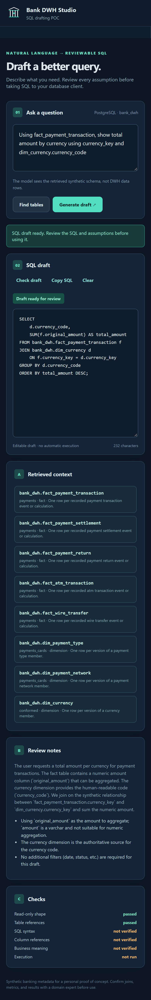

पर्दे के पीछे
PWA Invite Console
निजी वेब ऐप के निमंत्रण और उपकरण सँभालने के लिए एक छोटा कंसोल।
बैंकिंग डेटा के बारे में सवाल पूछें, संबंधित स्कीमा देखें और संपादन योग्य SQL ड्राफ्ट पाएँ।
लाइव PWA केवल आमंत्रण के लिए है।

Bank DWH Studio प्राकृतिक भाषा के माध्यम से एक बड़े बैंकिंग डेटा वेयरहाउस की खोज के लिए अवधारणा का एक व्यक्तिगत प्रमाण है। एक प्रश्न पूछें, वैकल्पिक रूप से एक बैंकिंग विषय क्षेत्र चुनें, और ऐप PostgreSQL SQL का मसौदा तैयार करने से पहले सबसे प्रासंगिक स्कीमा संदर्भ पुनर्प्राप्त करता है।
परिणाम जानबूझकर एक कोड ब्लॉक से अधिक है। यह एक संपादन योग्य मसौदे के साथ पुनर्प्राप्त तालिकाओं, व्याख्या, मान्यताओं, समीक्षा नोट्स और बुनियादी जांच को दिखाता है। जब कोई आवश्यक विवरण गायब हो - जैसे कि अगस्त के अंत के अनुरोध में वर्ष - तो सहायक स्पष्टीकरण मांग सकता है।
एक उत्पन्न बैंकिंग वेयरहाउस फिक्स्चर 5,000 कॉलम, रिश्ते, PostgreSQL DDL, एक कैटलॉग और एक छोटा बीज प्रदान करता है।
Elasticsearch मॉडल में कुछ भी भेजने से पहले प्रश्न के लिए आवश्यक मेटाडेटा तक एक बड़ी सूची को सीमित कर देता है।
पुनर्प्राप्त तालिकाएँ, व्याख्याएँ, धारणाएँ, नोट्स और चेक दृश्यमान रहते हैं ताकि मसौदे को आँख बंद करके स्वीकार करने के बजाय चुनौती दी जा सके।
केवल-आमंत्रण इंटरफ़ेस इंस्टॉल करने योग्य है और विस्तृत डेस्कटॉप स्क्रीन से लेकर कॉम्पैक्ट फोन तक के लिए अनुकूल है।
डेस्कटॉप, लैपटॉप, टैबलेट और फ़ोन पर छह प्रश्न। ये कैप्चर सिंथेटिक कैटलॉग के विरुद्ध उत्पन्न समीक्षा की गई प्रतिक्रियाओं को दोहराते हैं, जिससे पोर्टफोलियो उदाहरण दोहराए जा सकते हैं।





ऐप केवल SQL ड्राफ्ट बनाता है; वह किसी बैंकिंग डेटा वेयरहाउस से जुड़ता नहीं है और कोई क्वेरी चलाता नहीं है। उपयोगकर्ता परिणाम को संपादित या कॉपी करके अपने डेटाबेस क्लाइंट में अलग से चलाते हैं। ब्राउज़र को मॉडल की API कुंजी कभी नहीं मिलती।
स्वचालित जाँच केवल रीड-ओनली स्टेटमेंट की बुनियादी संरचना और ज्ञात टेबल संदर्भों को जाँचती है। SQL सिंटैक्स, कॉलम संदर्भ और व्यावसायिक अर्थ की मानवीय समीक्षा अभी भी आवश्यक है। वेयरहाउस के सभी नाम, संबंध और माप सिंथेटिक परीक्षण सामग्री हैं, स्वीकृत बैंकिंग परिभाषाएँ नहीं।
अवधारणा का तैनात प्रमाण Oracle Ampere A1 उदाहरण पर एक Node बैकएंड चलाता है, स्कीमा पुनर्प्राप्ति के लिए Elasticsearch और SQL ड्राफ्टिंग के लिए एक होस्टेड GPT-OSS मॉडल के साथ। रिपॉजिटरी एक व्यापक भविष्य की वास्तुकला का भी दस्तावेजीकरण करती है, जो स्पष्ट रूप से छोटे तैनात POC से अलग है।